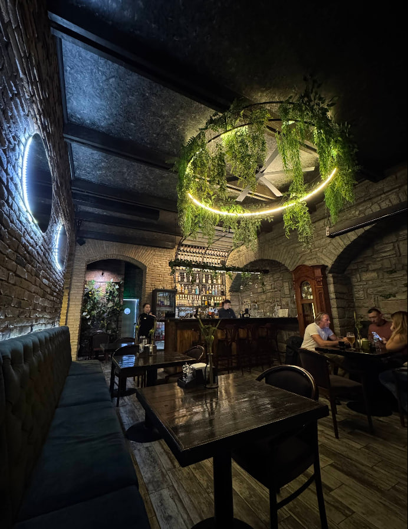
Головний зал
Цегляні арки, теплі відтінки та зручні столи створюють затишну атмосферу для вечірніх зустрічей.
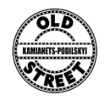

Цегляні арки, теплі відтінки та зручні столи створюють затишну атмосферу для вечірніх зустрічей.
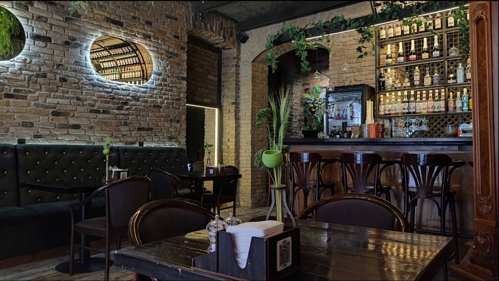
Вишукані десерти з натуральними інгредієнтами — ідеальне завершення вечері.
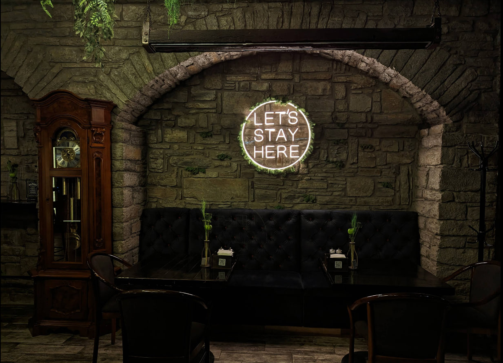
Простір, готовий для свят та особливих подій у компанії друзів.
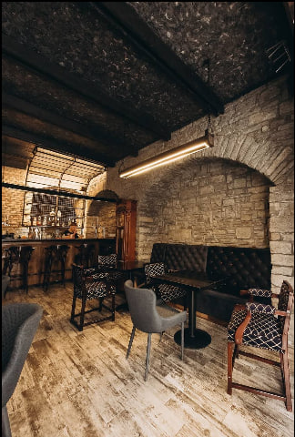
Наш шеф-кухар готує страви з любов'ю та увагою до кожної деталі.
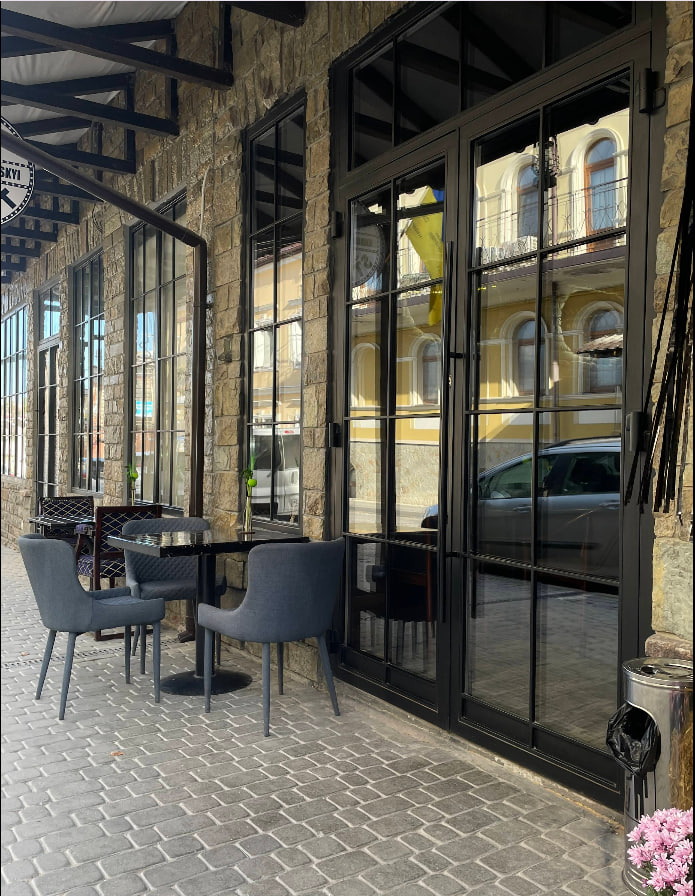
Простір у стилі старовинного міста з дерев'яними елементами та м'яким освітленням.
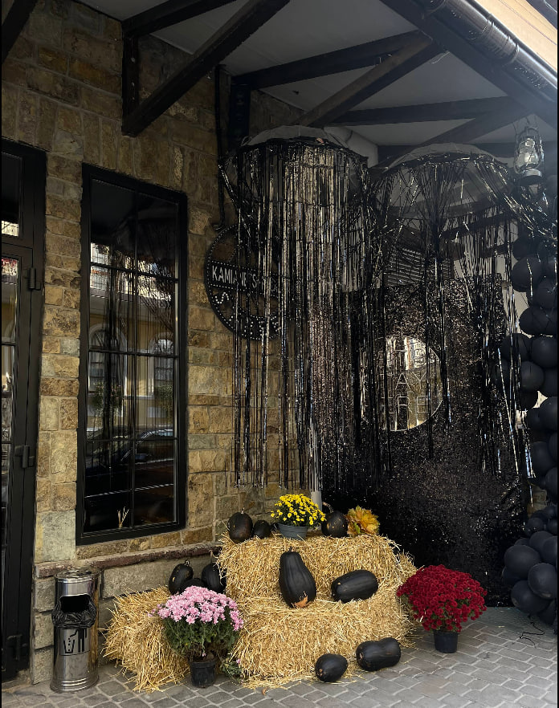
Різноманітність закусок з місцевих продуктів, що задає старт гастрономічної подорожі.
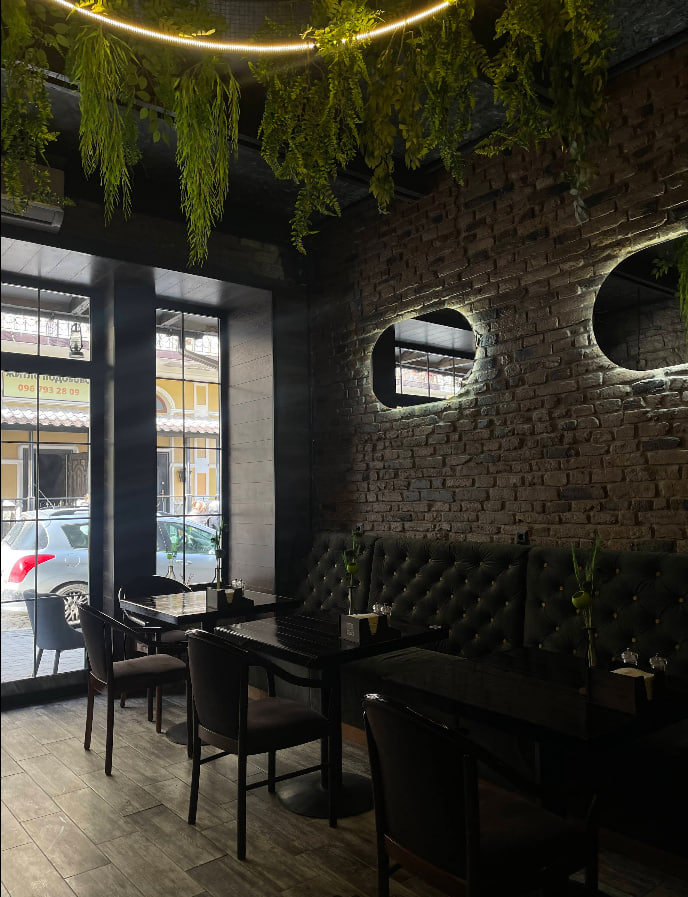
Затишне місце поруч із великими вікнами для спокійного обіду чи вечері.
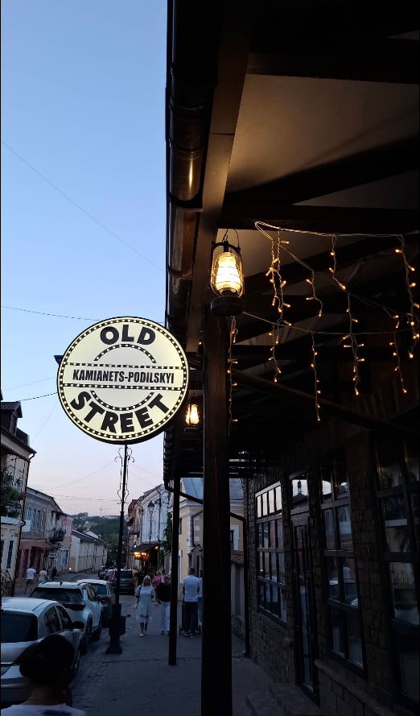
Кондитерські вишуканості, які не залишать байдужим жодного гостя.
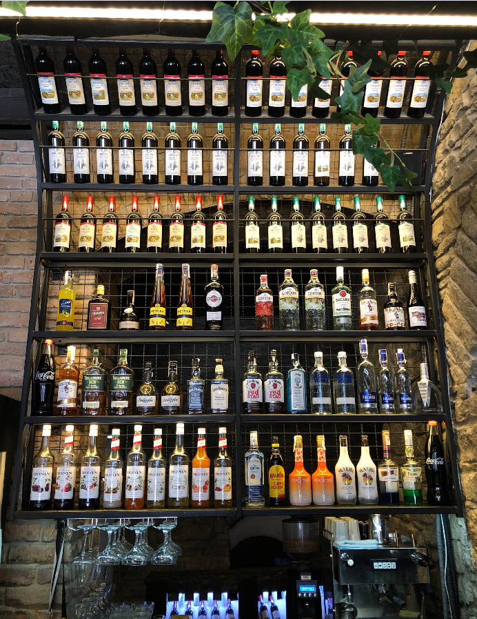
М'яке освітлення та стильні люстри створюють теплий настрій вечора.
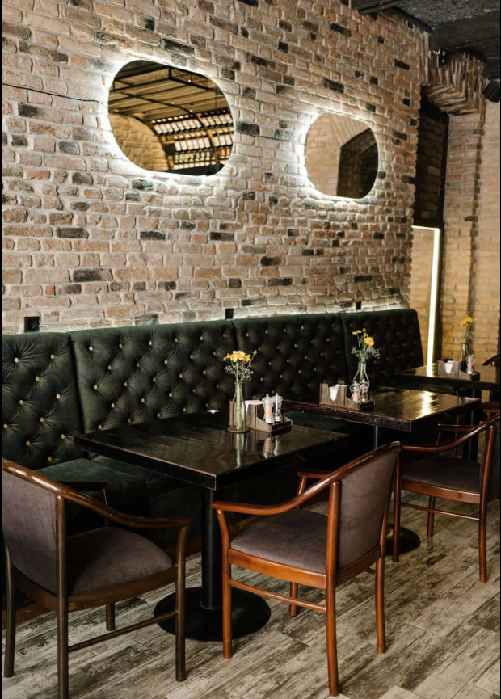
Свіжі інгредієнти готуються з увагою до деталей перед подачею гостям.
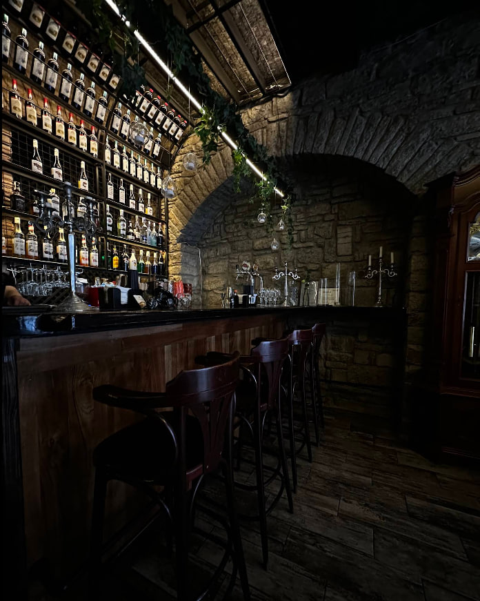
Авторські позиції меню, натхненні подільською традицією та сучасними смаками.
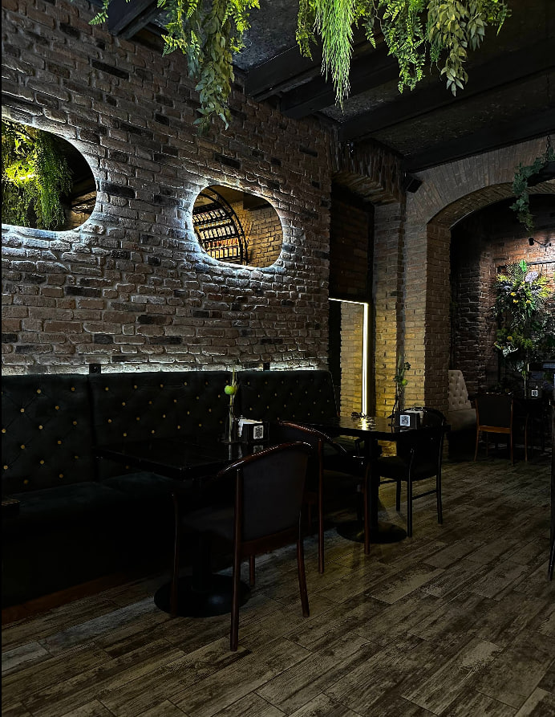
Чарівний вечір у затишному оточенні старого міста та автентичного стилю.
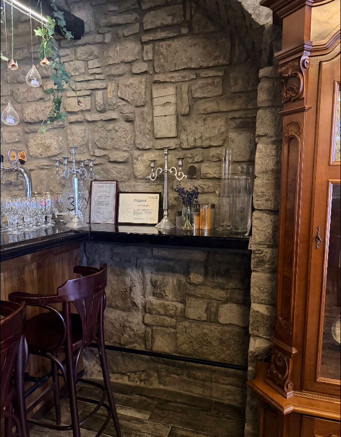
Підбір вин з усього світу, що доповнює кожну страву.
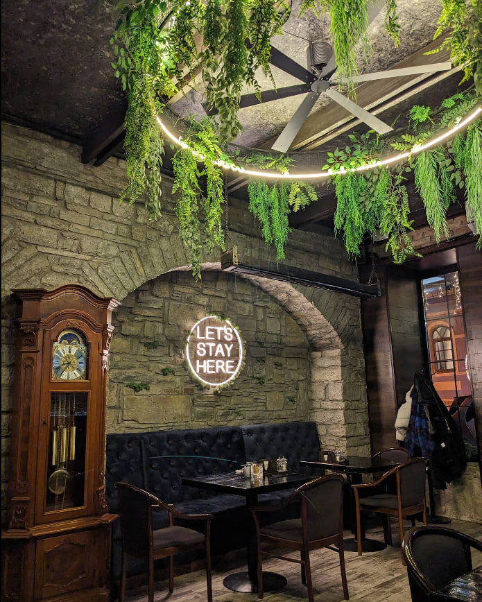
Професійний бар з авторськими напоями для кожного настрою.
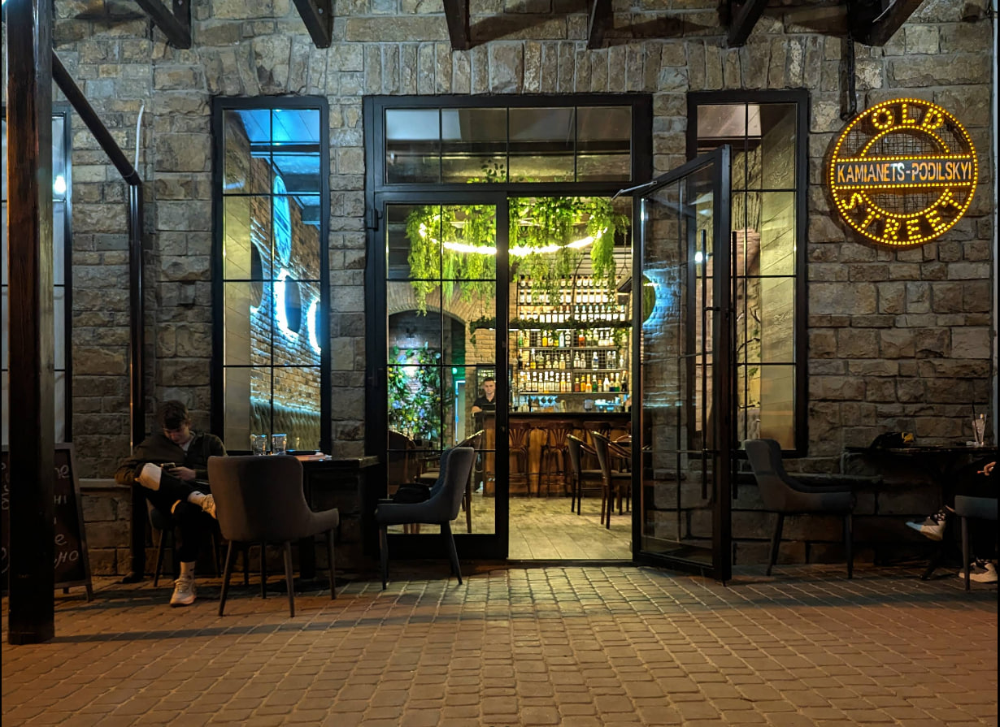
Соковитий стейк, красиво поданий з трав'яним маслом та сезонними овочами.
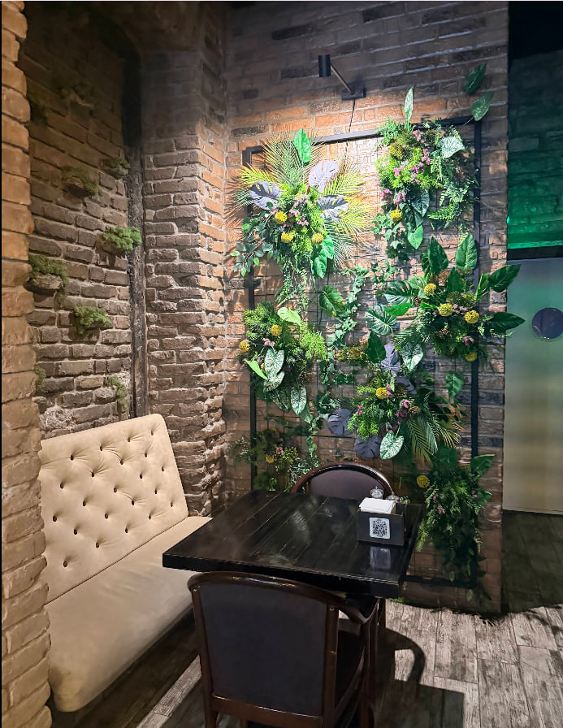
Затишна тераса серед квітів і старовинних будівель для вечірнього відпочинку.